Indicateurs socioéconomiques de la ville de Toulouse
En Occitanie, Toulouse et Montpellier sont les deux métropoles ayant le plus de Quartiers Prioritaires. Chef-Lieu de la région Occitanie, Toulouse est la quatrième commune la plus peuplée de France. Il est ainsi important de s’intéresser à ses quartiers prioritaires, afin de lever des inégalités.
Toulouse Métropole contient 16 Quartiers Prioritaires, étant :
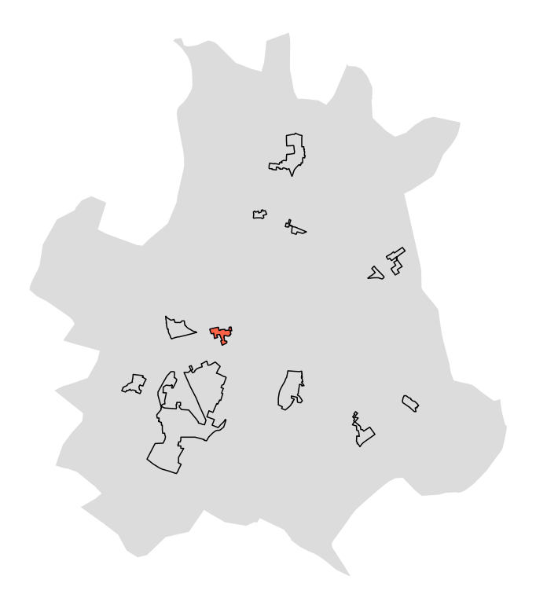
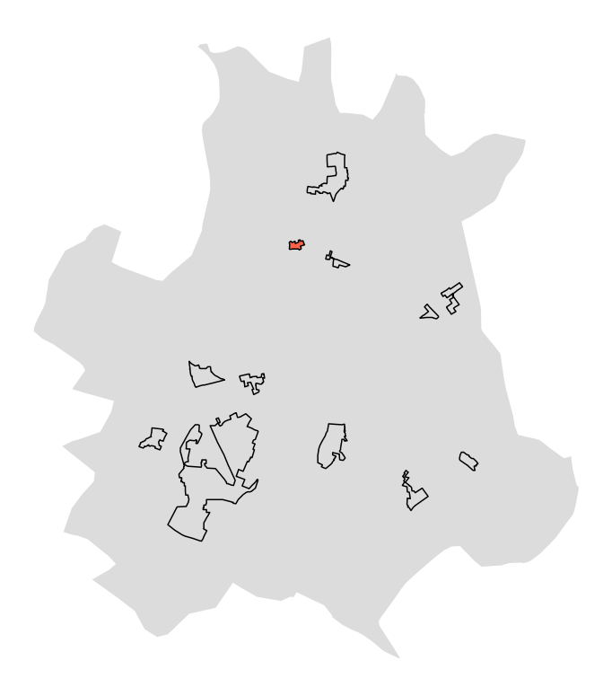
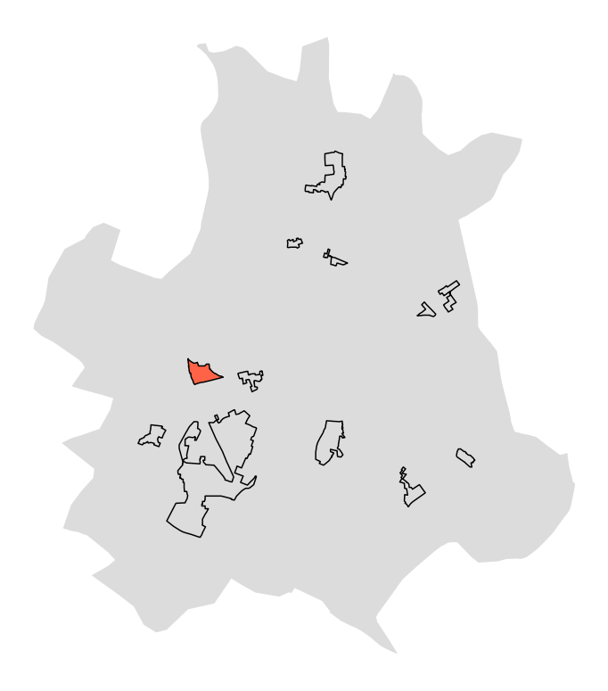
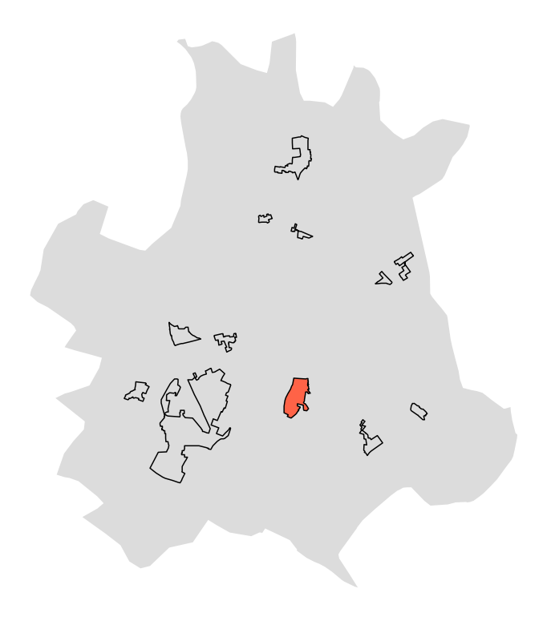
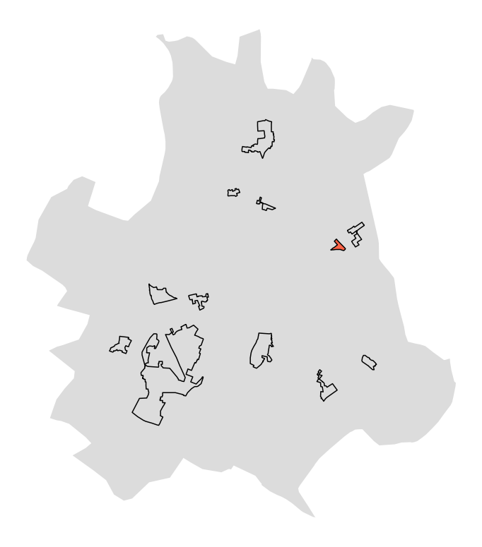
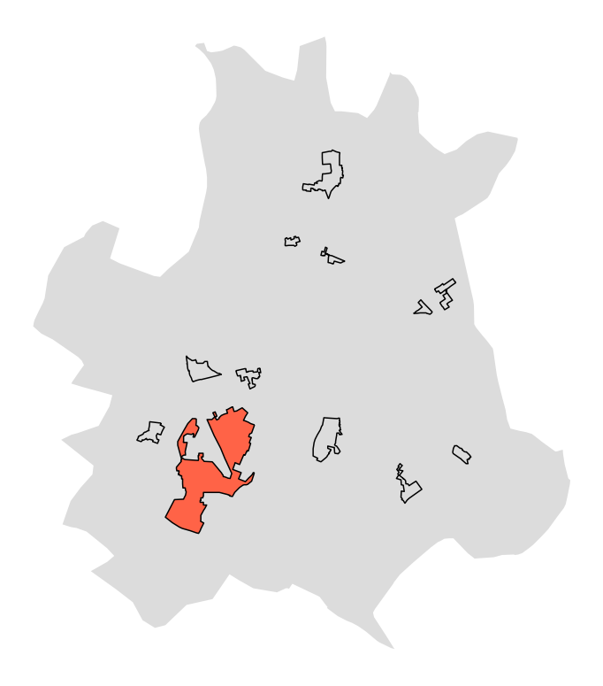
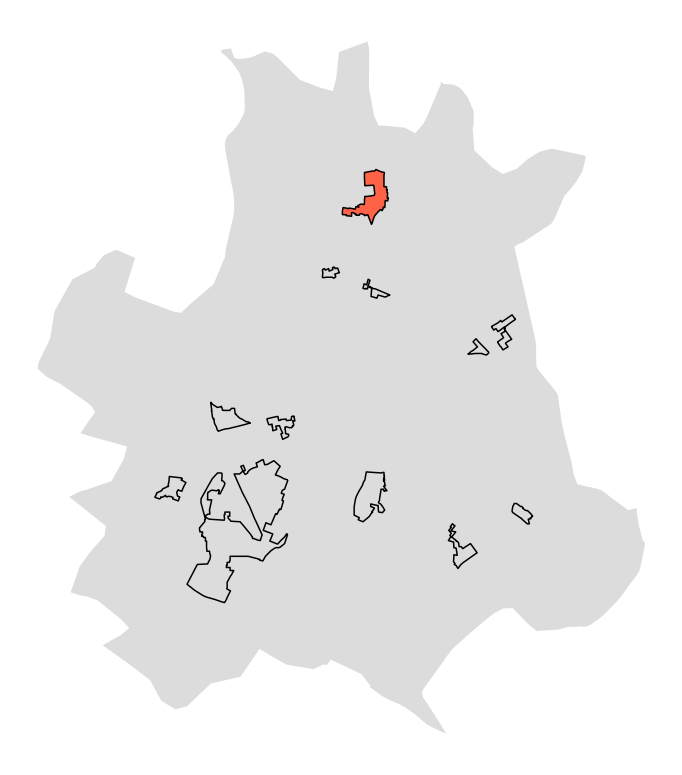
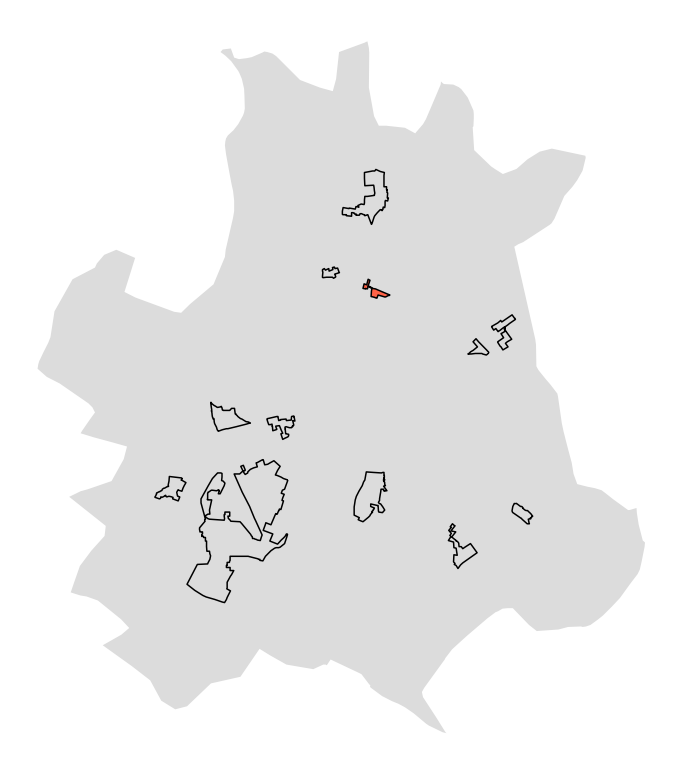
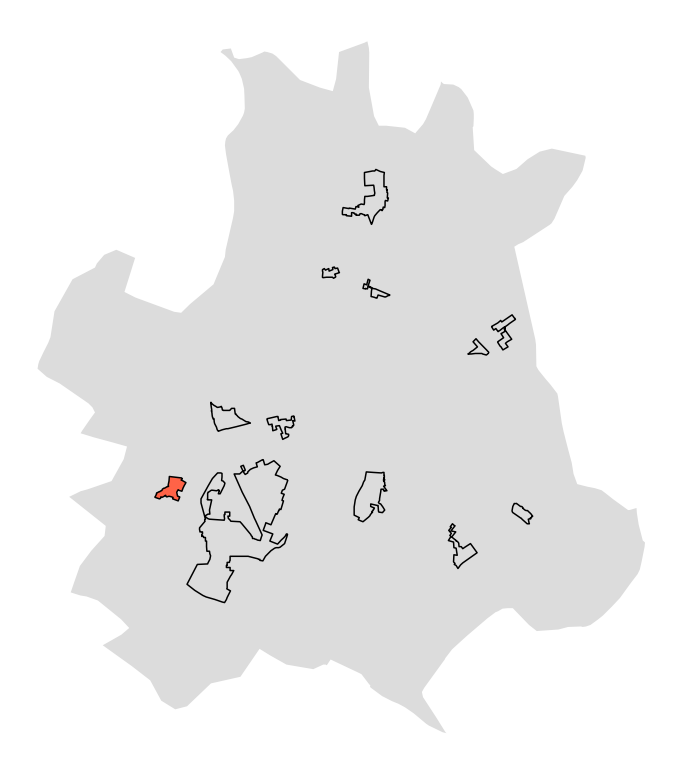
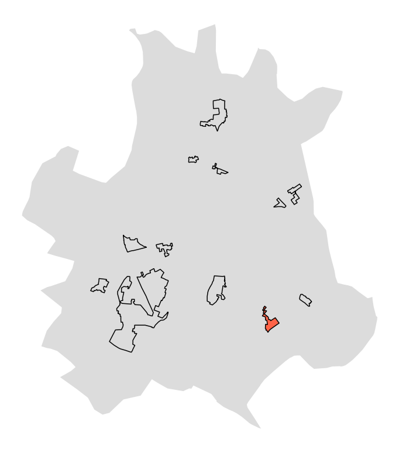
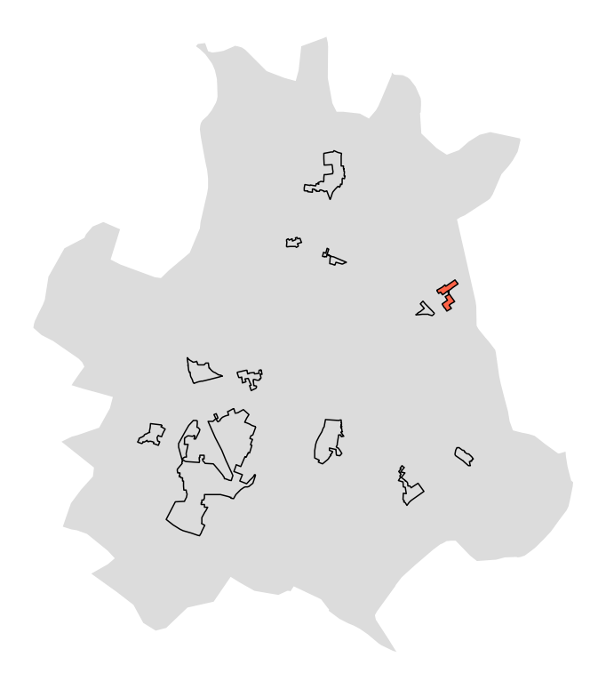
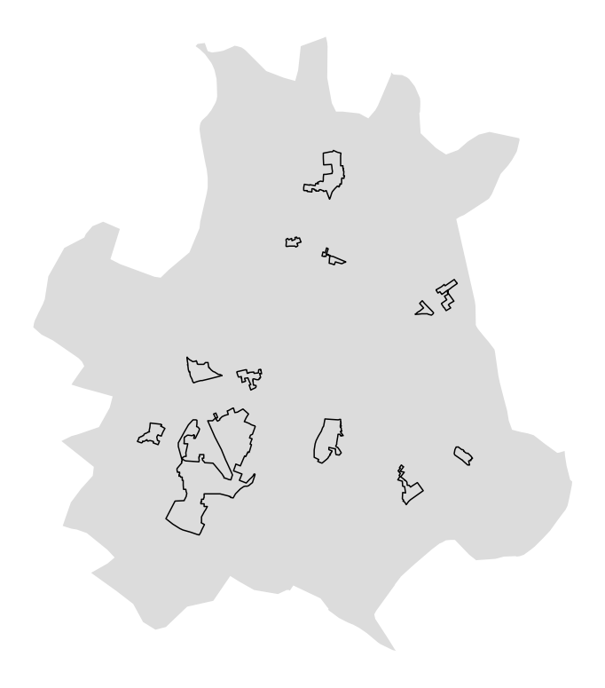
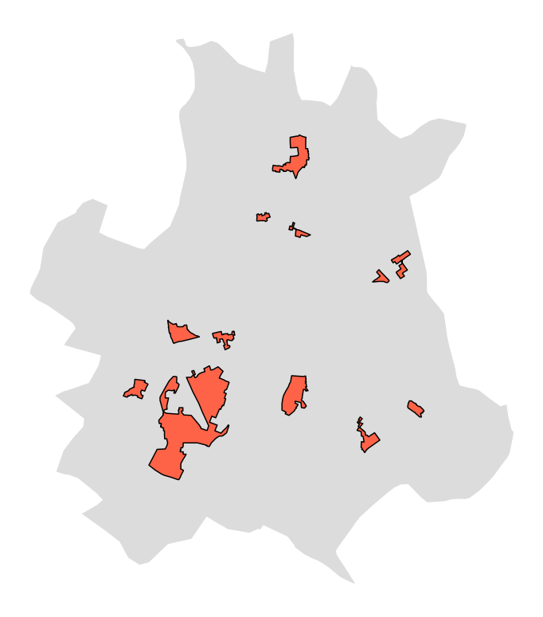
Inégalités de genre
Le taux de femmes. Aujourd’hui encore, de nombreuses inégalités persévèrent entre femmes et hommes, surtout au travail. En effet, les femmes sont bien plus souvent en temps partiel que les hommes. Pour un même volume de travail à temps plein, une femme gagne en moyenne 16,8% de moins qu’un homme dans le secteur public en France, et ce en 2020.
Chômage
Le taux de chômeurs. Les inégalités face au chômage sont énormes. Elles dépendent de l’âge, du diplôme, de l’origine, et de pleins d’autre choses. Le chômage est un indicateur d’inégalités pour de multiples raisons. Début 2021 et en France, le taux de chômage est de 8,1% pour l’ensemble des actifs ayant déjà travaillé alors qu’il était de 7,2% en 2019.
Immigration
Le taux d’étrangers. Face à l’emploi ou à la recherche de logement, les différentes nationalités font face à des nouvelles inégalités. En France, presque un sur cinq emplois sont interdits aux personnes qui n’ont pas une nationalité de l’Union Européenne. A titre d’exemple, ces emplois sont facteur, contrôleur de train, professeur des écoles, policiers… Tout cela se répecute sur la vie quotidienne. Un quart des immigrés occupent un logement trop petit, ce qui représente près de quatre fois plus que les non-immigrés.